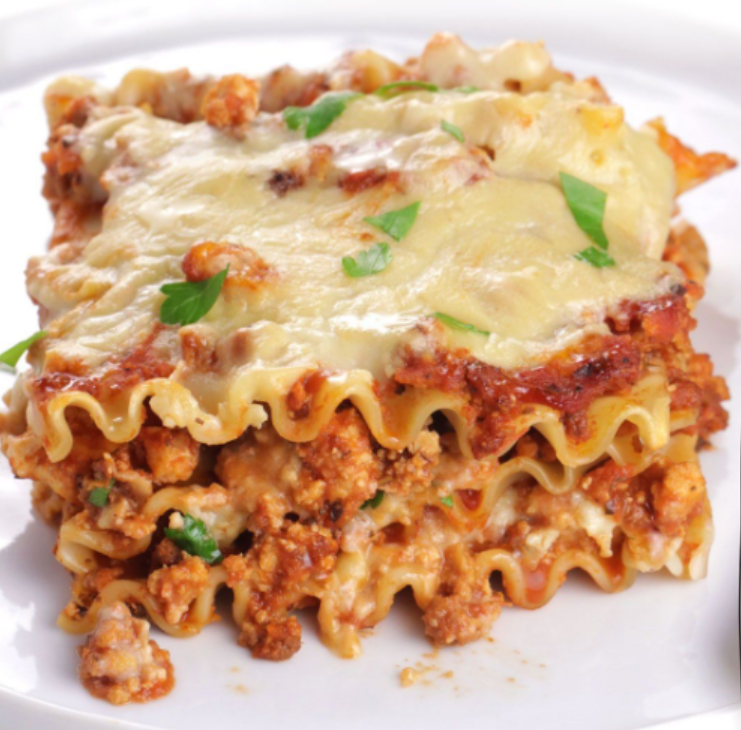

vegan lasagna recipe

Overview
Everyone loves lasagna, including me. That is why I make it as often as I can.
The key to a good lasagna is the bechamel sauce and the cheese.
I usually try to be creative with the rest.
I will use vegan meat, carrots and mushrooms in this recipe.
But you can use whatever you want instead. For example, spinach will also make an
amazing lasagna.
Ingredients
For the bechamel sauce
- 50g vegan butter
- 50g cup all-purpose flour
- 2 cups unsweetened plant milk
- 1/2 teaspoon salt
- 1/4 teaspoon ground nutmeg
- 1/4 teaspoon ground black pepper
For the lasagna
- 300g vegan meat
- 2 carrots
- 100g mushrooms
- 200g vegan cheese
- 300g tomato sauce
- 300g lasagna noodles
- 2 onions
- 2 cloves of garlic
Instructions
- Preheat the oven to 180°C.
- Peel and chop the onions, carrots, and mushrooms.
- Heat a pan over medium heat and add the vegan meat. Cook for 5 minutes.
- Add the onions, carrots, and mushrooms. Cook for 10 minutes.
- Add the tomato sauce and cook for 5 minutes.
- Make the bechamel sauce. Melt the butter in a saucepan over medium heat. Add the flour and cook for 2
minutes. Add the milk and whisk until the sauce thickens. Add the salt, nutmeg, and pepper.
- Assemble the lasagna. Spread a layer of bechamel sauce on the bottom of a baking dish. Add a layer of
lasagna noodles. Add a layer of vegan meat. Add a layer of bechamel sauce. Add a layer of vegan cheese.
Repeat the process until you run out of ingredients.
- Bake for 40 minutes
- Let the lasagna cool for 10 minutes before serving.